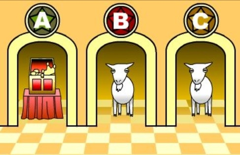

Simulations
de paradoxes probabilistes
Ou comment résoudre des problemes complexes sans maths
Paradoxes probabilistes
Définition générique: Proposition contraire à l’opinion commune ou à la vraisemblance.
Les paradoxes probabilistes sont des problèmes de probabilités dont la solution est contre-intuitive
Qu'est-ce que le hasard ?

XKCD.com/221
Fonctions Random
- Javascript: Math.random() renvoie un nombre entre 0 et 1
- Java: Math.random() renvoie un nombre entre 0 et 1
- C/C++: rand() renvoie un nombre entier entre 0 et RAND_MAX
Deux sortes de générateurs
- Les générateurs de type pseudo-random
- Les générateurs de type true random
Les premiers sont basés sur une formule mathématique, les seconds utilisent un pool d'entropie (bruit collecté au niveau du système d'exploitation) ou du matériel externe (ondes radio, Lavarand, etc)
Evaluation
Evaluation BSI (eq. allemand de l'ANSSI)
- K1: les séquences de nombre ne se répètent pas (ou peu)
- K2: propriétés statistiques identiques à celles d'un RNG idéal
- K3: Impossible de deviner les valeurs suivantes ou antérieures à partir d'une sous-séquence
- K4: Impossible de deviner les valeurs suivantes ou antérieures même en connaissant l'état interne du RNG
Exemple: Algorithme MWC1616
https://gist.github.com/matthewmorrone1/3ded1f92f6c548b0310f
var MAX_RAND = Math.pow(2, 32);
var state = [seed(), seed()];
var mwc1616 = function mwc1616() {
var r0 = (18030 * (state[0] & 0xFFFF)) + (state[0] >>> 16) | 0;
var r1 = (36969 * (state[1] & 0xFFFF)) + (state[1] >>> 16) | 0;
state = [r0, r1];
var x = ((r0 << 16) + (r1 & 0xFFFF)) | 0;
if (x < 0) {
x = x + MAX_RAND;
}
return x / MAX_RAND;
}
Évaluation du MWC1616
https://adtmag.com/Blogs/Dev-Watch/2016/01/random-javascript-fix.aspx
Corrigé sur chrome 49 (2016)
Le paradoxe des anniversaires
Question
Quelle est la probabilité pour que dans un groupe de 23 personnes, au moins deux personnes aient le même jour anniversaire ?
Solution

Exercice
Trouver la solution (approximation) en écrivant un simulateur
Algorithme
- Prendre un groupe de taille quelconque
- Établir un jour anniversaire au hasard pour chaque membre (/365)
- Vérifier s'il y a des jours identiques
- Compter et itérer
Hint
Math.floor(Math.random() * 365) = nombre entre 0 et 364, soit 365 possibilités
Solution
Solution en Javascript
Solution
| n | p(n) |
|---|---|
| 1 | 0.0% |
| 5 | 2.7% |
| 10 | 11.7% |
| 20 | 41.1% |
| 23 | 50.7% |
| 30 | 70.6% |
| 40 | 89.1% |
| 50 | 97.0% |
| 60 | 99.4% |
| 70 | 99.9% |
| 100 | 99.99997% |
Paradoxe de Monty Hall
Le joueur est placé devant 3 portes fermés, l'une d'elle contient le trésor, les deux autres n'ont rien du tout.
Le joueur doit choisir une porte.
L'animateur, qui sait où se trouve le prix, ouvre une porte perdante parmis les deux restantes.
Le joueur peut alors choisir de garder son choix initial, ou changer de porte.
Le joueur doit-il garder sa porte, changer, ou bien est-ce que ça revient au même ?
Résumé
- 3 portes, le joueur en choisit une
- L'animateur en ouvre une
- Le joueur peut alors changer de porte.
Quelle est la probabilité de succès s'il garde son premier choix ? S'il change de porte ?

Solution
Solution (contre-intuitive)
- Quand au début du jeu il choisit une porte: 1/3
- L'animateur ouvre une porte = il élimine une porte
-
La porte initiale: 1/3
La porte restante: 2/3
Écrivons un simulateur du jeu
Pour chaque tirage:
- Le programme choisit la porte avec le prix
- Le programme fait choisir une porte au joueur
- Cas sans changement: le joueur gagne s'il avait choisit la bonne porte
- Cas avec changement: le joueur gagne s'il avait choisit la mauvaise porte
Au moins 1000 tirages
Pour chaque tirage:
- Trois portes
- Le programme choisit la porte avec le prix
- Le programme fait choisir une porte au joueur
- Cas sans changement: le joueur gagne s'il avait choisit la bonne porte
- Cas avec changement: le joueur gagne s'il avait choisit la mauvaise porte